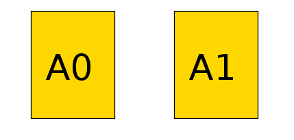
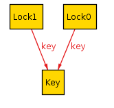
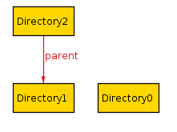

Signatures¶
A signature expresses a new type in your spec. It can be anything you want. Here are some example signatures:
Time
State
File
Person
Msg
Joke
Pair
Each model will have some number of each signature, called atoms. Take the following spec:
sig A {}
The following would be a valid model:
Here we have two atoms A$1 and A$0. Both count as instances of the A signature. See visualizer for more on how to read the visualizations.
Usually we care about the relationships between the parts of our systems. We don’t just care that there are people and accounts, we care which people have which accounts. We do this by adding relations inside of the signature body.
sig Person {}
sig Car {}
sig Registration {
owner: Person,
car: Car
}
This defines a new Registration type, where each Registration has an
owner, which is a Person, and a car, which is a Car. The comma
is required.
Tip
Extra commas are ignored. So you can write Registration instead like this:
sig Registration {
, owner: Person
, car: Car
}
Relations¶
The body of a signature is a list of relations, which show how the signatures are connected to each other.
Relations are separated by a comma. The list can also start and end with a comma. Standard convention is to prefix every relation with a comma.
Relations can refer to the same signature. This is valid:
sig Node {
, edge: set Node
}
Alloy can generate models where a relation points to the same atom. For this reason we often want to add contraints to our model, such as Facts or Predicates.
Note
Each relation in the body of a signature actually represents a relation type. If we have:
sig A {r: one B}
Then r is set of relations in A -> B. See Sets and Relations for more information.
Different signatures may have relationships with the same name as long as the relationship is not ambiguous.
Multiplicity¶
Each relation has a multiplicity, which represents how many atoms it
can include. If you do not include a multiplicity, it’s assumed to be
one.
one¶
The default. r: one A states that there is exactly one A in the
set.
sig Key {}
sig Lock {
, key: one Key
}
This says that every lock has exactly one Key. This does not guarantee a 1-1 correspondence! Two locks can share the same key.
If no multiplicity is listed, Alloy assumes to be one. So the above
relation can also be written as key: Key.
lone¶
r: lone A states that either there is one A in the set, or that
the set is empty. You can also think of it as “optional”.
sig Directory {
, parent: lone Directory
}
This says that every directory either has one parent, or it does not have a parent (it’s a root directory).
set¶
r: set A states that there can be any number of A in the relation.
sig User {}
sig Region {
servers: set User
}
some¶
r: some A states that there is at least one A in the relation.
sig Author {}
sig Book {
by: some Author
}
disj¶
disj can be prepended to any multiplicity to gaurantee that it will be disjoint among all atoms. If we write
sig Lock {}
sig Key {
lock: disj one Lock
}
Then every key will correspond to a different lock. If we instead write
sig Lock {}
sig Key {
locks: disj some Lock
}
Then every key will correspond to one or more locks, but no two keys will share a lock.
Field Expressions¶
A field can be a simple expression over other signatures.
sig Resource {
permissions: set (User + Group)
}
In addition to full signatures, the expression may contain this, which refers to the specific atom itself.
sig Node {
-- no self loops
, edge: set Node - this
}
A dependent field is one where the expression depends on the values of other fields in the atom. The dependencies must be fields defined either in the signature or its supertype.
sig Item {}
sig Person {
, favorite: Item
, second: Item - favorite
}
Multirelations¶
Signatures can have multirelations as fields:
sig Door {}
sig Card {}
sig Person {
access: Card -> Door
}
In this case access is a ternary relationship, where each element of
access is a relation of form Person -> Card -> Door. Using the dot operator, if access = P -> C -> D, then P.access = C -> D and access.D = P -> C.
Multirelations have a special kind of multiplicity:
r: A m -> n B
This says that each member of A is mapped to n elements of B,
and m elements of A map to each element of B. If not specified,
the multiplicities are assumed to be set.
As an aide, use the following table:
m |
n |
Meaning |
|---|---|---|
set |
set |
No restrictions |
set |
some |
Each A used at least once |
set |
one |
Each A is mapped to exactly one B (total function) |
set |
lone |
Each A is mapped to at most one B (partial function) |
some |
set |
Each B mapped to at least once |
some |
some |
Every A mapped from and every B mapped to |
some |
one |
Each A used exactly once, each B used at least once |
some |
lone |
Each A used at most once, each B used at least once |
one |
set |
Each B used exactly once, no other restrictions (one A can map to two B atoms) |
one |
some |
Each B used exactly once, each A used at least once |
one |
one |
Only satisfiable if #A = #B, bijection |
one |
lone |
At most #A arrows, exactly #B arrows, each A used at most once |
lone |
set |
Each B used at most once |
lone |
some |
Each A used at least once and each B used at most once |
lone |
one |
Each A used exactly once, each B used at most once |
lone |
lone |
Each A used at most once, each B used at most once |
Todo
Replace the autogen table with a proper list table that doesn’t require exact rst formatting
Not all multiplicities will have valid models. For example,
sig A {}
sig B {}
one sig C {
r: A one -> one B
}
run {} for exactly 3 A, exactly 2 B
Since r must be 1-1, and there’s different numbers of A and B sigs, nothing satisfies this model.
Multirelations can go higher than ternary using the same syntax, but this is generally not recommended.
Signature Multiplicity¶
In addition to having multiplicity relationships, we can put multiplicities on the signatures themselves.
one sig Foo {}
some sig Bar {}
//etc
By default, signatures have multiplicity set, and there may be zero
or more in the model. By making the signature one, every model will
have exactly one atom of that signature. By writing some, there will
be at least one. By writing lone, there will be zero or one.
Subtypes¶
We can make some signatures subtypes of other signatures.
in¶
Writing sig Child in Parent creates an inclusive subtype: any
Parent atoms may or may not also be a Child. This is also called a
“subset subtype”.
sig Machine {}
sig Broken in Machine {}
sig Online in Machine {}
In this case, any Machine can also be Broken, Online, both, or neither.
+¶
A single inclusive subtype can be defined for many parent signatures. We can do this by using the set union operator on the parent signatures.
sig Bill, Client {}
sig Closed in Bill + Client {}
extends¶
Writing sig Child extends Parent creates a subtype, as with in.
Unlike in, though, any Parent atom can only match up to one
extension.
sig Machine {}
sig Server extends Machine {}
sig Client extends Machine {}
In this case, any Machine can also be a Server, a Client, or neither, but not both.
Todo
[img]
Something can belong to both extend and in subtypes.
sig Machine {}
sig Broken in Machine {}
sig Server extends Machine {}
sig Client extends Machine {}
A Machine can be both a Server and Broken, or a Client and Broken, or just one of the three, or none at all.
abstract¶
If you make a signature abstract, then all instances of the
signature will be extensions, and there will be no signatures that are
still the base.
abstract sig Machine {}
sig Broken in Machine {}
sig Server extends Machine {}
sig Client extends Machine {}
Here any machine must be either a Server or a Client. They still may or may not be Broken.
Warning
If there is nothing extending an abstract signature, the abstract is ignored.
Tip
You can place multiple signatures on the same line.
sig Server, Client extends Machine {}
Subtypes and Relationships¶
All subtypes are also their parent type. So if we have
sig B {}
sig C in B {}
sig A {
, b: B
, c: C
}
Then the b relation can include A -> C, but c cannot include A -> B.
Child Relations¶
Children automatically inherit all of their Parent fields, and also can define their own fields. We can have:
sig Person {}
sig Account {
, person: Person
}
sig PremiumAccount in Account {
, billing: Person
}
Then all Account atoms will have the person field, while all PremiumAccount atoms will have both a person field and a billing field.
Note
This also applies to Implicit Facts. If Account has an implicit fact, it automatically applies to PremiumAccount.
It is not possible redefine a relationship, only to add additional ones.
Enums¶
Enums are a special signature.
enum Time {Morning, Noon, Night}
The enum will always have the defined atoms in it. Additionally, the
atom will have an ordering. In this case, Morning will be the first
element, Noon the second, and Night will be the third. You can use enums
in facts and predicates, but you cannot add additional properties to
them.
Tip
If you want to use an enumeration with properties, you can emulate this
by using one and signature extensions.
abstract sig Time {}
one sig Morning, Noon, Night extends Time {
time: Time
}
You can also use this to make enumerations without a fixed number of
elements, by using lone instead.